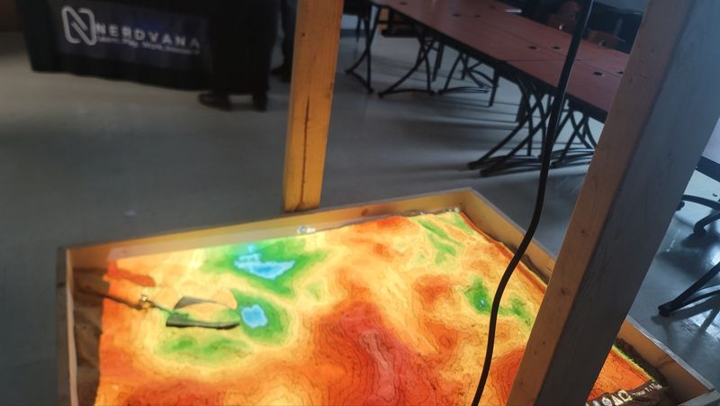

STEM Educator & Tech Developer
At Nerdvana I wore two hats: educator and builder. I worked directly with elementary school students to introduce them to coding, engineering thinking, and problem-solving — while also developing the digital tools and interactive content used in those sessions.
Interactive STEM Sandbox
Co-created an interactive sandbox curriculum and digital materials that made engineering and computer science concepts accessible and engaging for elementary-age students. The program blended hands-on activities with software-based explorations.
Community-Level Change
The work reached students in South Texas who otherwise had limited exposure to STEM careers and technology. By meeting kids where they were and making learning fun, we planted seeds for the next generation of engineers and developers from our community.
Key Takeaways
Teaching others is the fastest way to find the gaps in your own knowledge. Every lesson I designed for Nerdvana forced me to break down complex concepts — coding logic, robotics mechanics, hardware wiring — into something a 10-year-old could grasp. That process sharpened my own understanding more than any textbook. I also discovered I genuinely enjoy mentoring: watching a student's face light up when something clicks is one of the most rewarding experiences I've had in tech.
Experience in Photos

Certificate of Completion
Nerdvana Internship · 2025–2026